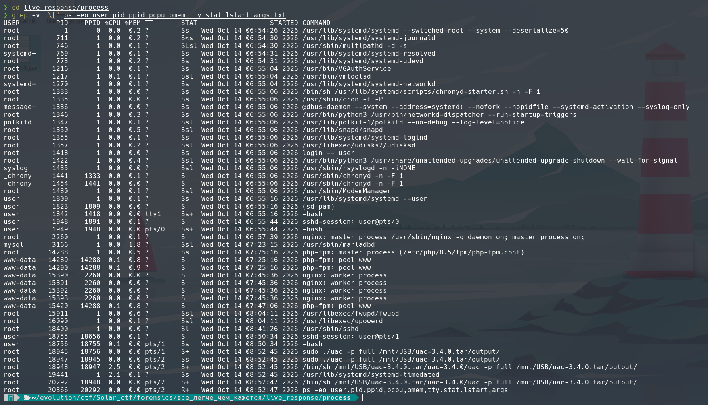
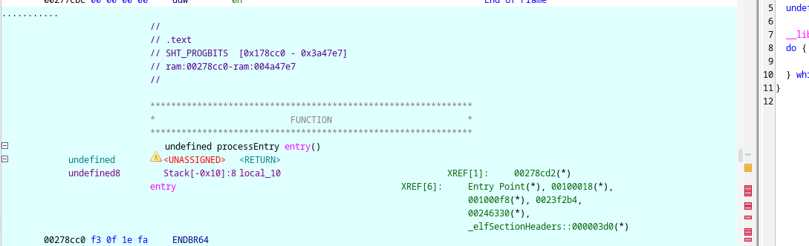

От чего оттолкнулись
По условию атакующие успели побывать на тестовом веб-сервере, но систему после атаки не перезагружали. Поэтому сначала проверили не логи, а список процессов и данные /proc: вредонос мог ещё работать во время сбора артефактов.
Ход решения
01. Нашли необычный «sshd»
В live_response/process обнаружились два процесса с удалённым с диска исполняемым файлом /usr/sbin/sshd (deleted). Сам по себе такой признак встречается и после обновлений, но у PID 18400 рабочая директория была /var/www/portal. Процесс запускался через sudo и слушал нестандартный порт 41095.

02. Восстановили и исследовали бинарь
Файл proc/18400/recovered_exe оказался Rust-бинарём. Строки ACCESS и access denied вывели на проверку ввода. Через ссылки на строки в Ghidra нашли функцию с обфусцированным потоком управления.

03. Получили секрет
Одно состояние собирало ожидаемый пароль, другое — секрет при верном вводе. Фрагменты расшифровывались разными функциями; для их проверки использовали Unicorn и эмулировали отдельные функции ELF, не запуская вредонос как обычную программу.
Команды, смещения строк и фрагмент расшифровки приведены в полном райтапе PDF.